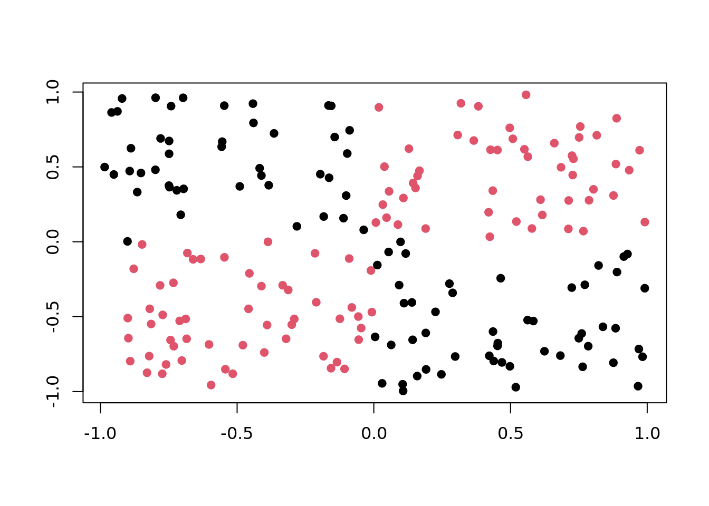
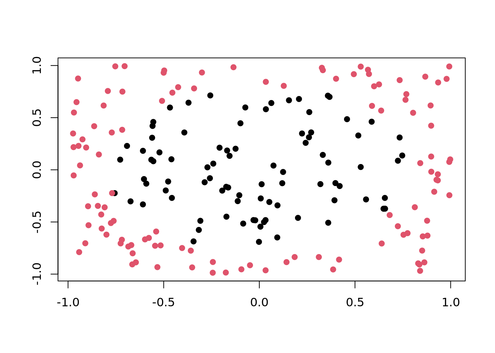
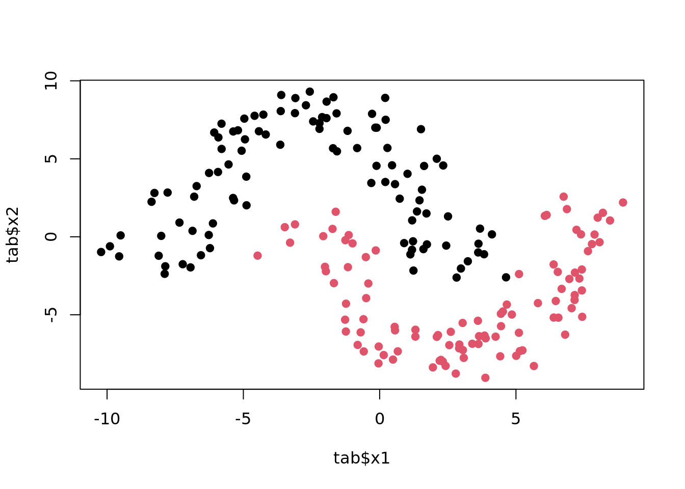
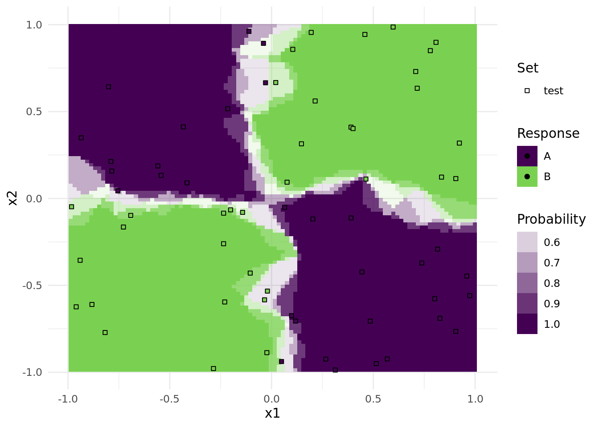

library("mlr3")The visualization of decision boundaries helps to understand what the pros and cons of individual classification learners are. This posts demonstrates how to create such plots.
We load the mlr3 package.
We initialize the random number generator with a fixed seed for reproducibility, and decrease the verbosity of the logger to keep the output clearly represented.
set.seed(7832)
lgr::get_logger("mlr3")$set_threshold("warn")Artificial Data Sets
The three artificial data sets are generated by task generators (implemented in mlr3):
N <- 200
tasks <- list(
tgen("xor")$generate(N),
tgen("moons")$generate(N),
tgen("circle")$generate(N)
)XOR
Points are distributed on a 2-dimensional cube with corners \((\pm 1, \pm 1)\). Class is "red" if \(x\) and \(y\) have the same sign, and "black" otherwise.
plot(tgen("xor"))
Circle
Two circles with same center but different radii. Points in the smaller circle are "black", points only in the larger circle are "red".
plot(tgen("circle"))
Moons
Two interleaving half circles (“moons”).
plot(tgen("moons"))
Learners
We consider the following learners:
library("mlr3learners")
learners <- list(
# k-nearest neighbours classifier
lrn("classif.kknn", id = "kkn", predict_type = "prob", k = 3),
# linear svm
lrn("classif.svm", id = "lin. svm", predict_type = "prob", kernel = "linear"),
# radial-basis function svm
lrn("classif.svm",
id = "rbf svm", predict_type = "prob", kernel = "radial",
gamma = 2, cost = 1, type = "C-classification"
),
# naive bayes
lrn("classif.naive_bayes", id = "naive bayes", predict_type = "prob"),
# single decision tree
lrn("classif.rpart", id = "tree", predict_type = "prob", cp = 0, maxdepth = 5),
# random forest
lrn("classif.ranger", id = "random forest", predict_type = "prob")
)The hyperparameters are chosen in a way that the decision boundaries look “typical” for the respective classifier. Of course, with different hyperparameters, results may look very different.
Fitting the Models
To apply each learner on each task, we first build an exhaustive grid design of experiments with benchmark_grid() and then pass it to benchmark() to do the actual work. A simple holdout resampling is used here:
design <- benchmark_grid(
tasks = tasks,
learners = learners,
resamplings = rsmp("holdout")
)
bmr <- benchmark(design, store_models = TRUE)A quick look into the performance values:
perf <- bmr$aggregate(msr("classif.acc"))[, c("task_id", "learner_id", "classif.acc")]
perf task_id learner_id classif.acc
1: xor_200 kkn 0.9402985
2: xor_200 lin. svm 0.5223881
3: xor_200 rbf svm 0.9701493
4: xor_200 naive bayes 0.4328358
5: xor_200 tree 0.9402985
6: xor_200 random forest 1.0000000
7: moons_200 kkn 1.0000000
8: moons_200 lin. svm 0.8805970
9: moons_200 rbf svm 1.0000000
10: moons_200 naive bayes 0.8955224
11: moons_200 tree 0.8955224
12: moons_200 random forest 0.9552239
13: circle_200 kkn 0.8805970
14: circle_200 lin. svm 0.4925373
15: circle_200 rbf svm 0.8955224
16: circle_200 naive bayes 0.7014925
17: circle_200 tree 0.7462687
18: circle_200 random forest 0.7761194Plotting
To generate the plots, we iterate over the individual ResampleResult objects stored in the BenchmarkResult, and in each iteration we store the plot of the learner prediction generated by the mlr3viz package.
library("mlr3viz")
n <- bmr$n_resample_results
plots <- vector("list", n)
for (i in seq_len(n)) {
rr <- bmr$resample_result(i)
plots[[i]] <- autoplot(rr, type = "prediction")
}We now have a list of plots. Each one can be printed individually:
print(plots[[1]])
Note that only observations from the test data is plotted as points.
To get a nice annotated overview, we arranged all plots together in a single pdf file. The number in the upper right is the respective accuracy on the test set.
pdf(file = "plot_learner_prediction.pdf", width = 20, height = 6)
ntasks <- length(tasks)
nlearners <- length(learners)
m <- msr("classif.acc")
# for each plot
for (i in seq_along(plots)) {
plots[[i]] <- plots[[i]] +
# remove legend
ggplot2::theme(legend.position = "none") +
# remove labs
ggplot2::xlab("") + ggplot2::ylab("") +
# add accuracy score as annotation
ggplot2::annotate("text",
label = sprintf("%.2f", bmr$resample_result(i)$aggregate(m)),
x = Inf, y = Inf, vjust = 2, hjust = 1.5
)
}
# for each plot of the first column
for (i in seq_len(ntasks)) {
ii <- (i - 1) * nlearners + 1L
plots[[ii]] <- plots[[ii]] + ggplot2::ylab(sub("_[0-9]+$", "", tasks[[i]]$id))
}
# for each plot of the first row
for (i in seq_len(nlearners)) {
plots[[i]] <- plots[[i]] + ggplot2::ggtitle(learners[[i]]$id)
}
gridExtra::grid.arrange(grobs = plots, nrow = length(tasks))
dev.off()As you can see, the decision boundaries look very different. Some are linear, others are parallel to the axis, and yet others are highly non-linear. The boundaries are partly very smooth with a slow transition of probabilities, others are very abrupt. All these properties are important during model selection, and should be considered for your problem at hand.